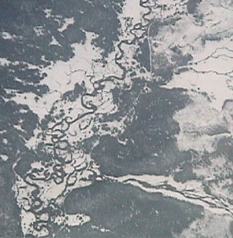

Stream Patterns in the Snow
April 30, 2000
On a flight from Spokane, Washington to Salt Lake City, Utah, these patterns of streams in the snow were observed in the mountains of southern Idaho. They are examples of the patterns of water runoff that help shape the surface of the Earth.
|  | The streams show complex meandering paths in the valley where the slope is small. But note the nearly straight-line path of the stream which apparently comes down a steep slope to the valley. |
The areas of white in the above photographs appear to be flat valley regions where the meandering of the streams over time has leveled out the terrain. They show the major influence of the flowing water on the form of the area.
|